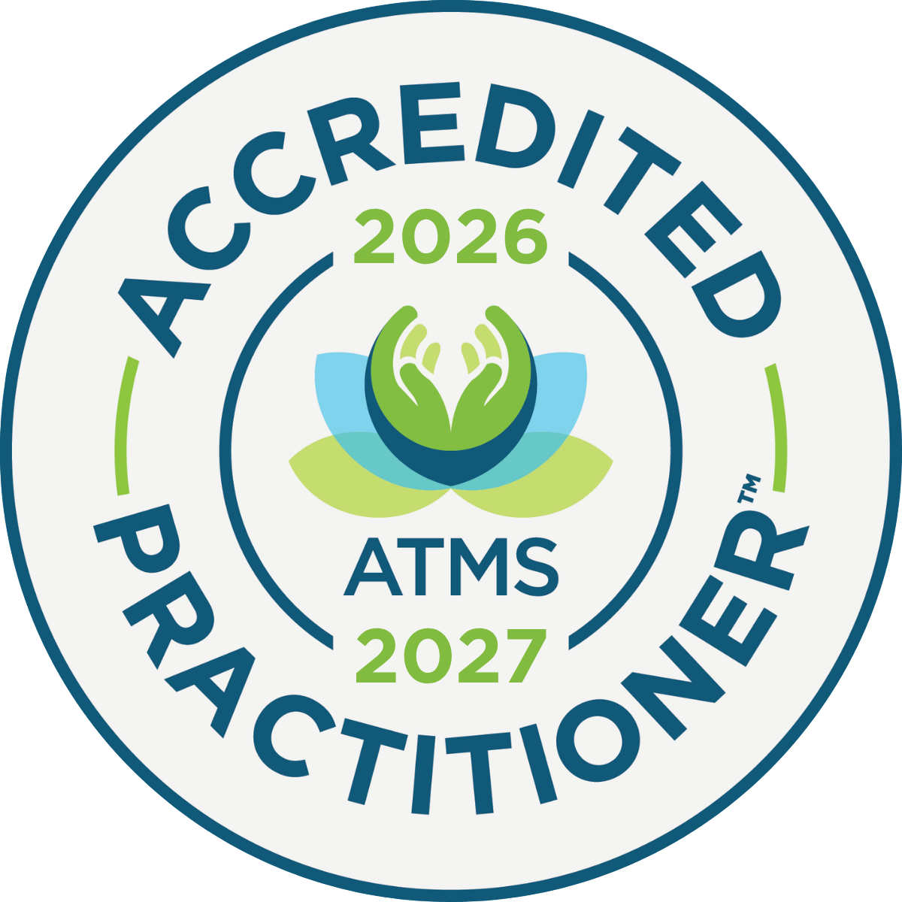
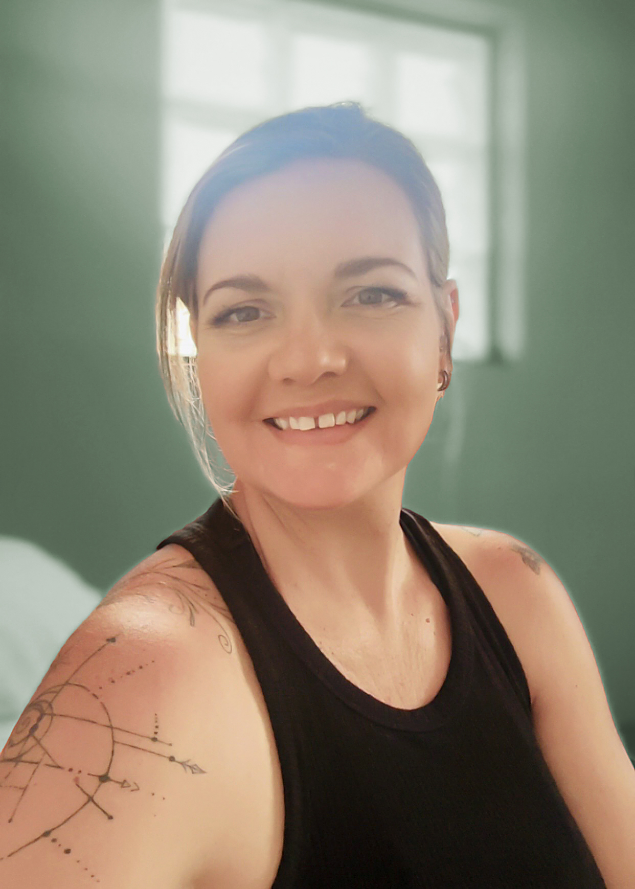

Healing Services • Sunshine Coast
I bring restorative treatments to you, or you're welcome to see me at Forward Health in Currimundi on Tuesdays. A supportive and results-focused experience.
Fully Insured and Accredited with The Australian Traditional-Medicine Society (ATMS)
Holistic approach to health using muscle monitoring to identify imbalances and restore optimal function to your body's systems.
Learn MorePressure is applied to specific points on the body using the fascia system to eliminate pain and restore range of motion.
Learn MoreTraditional massage techniques combined with hot & cold crystals to release tension and promote deep fascia and muscle release.
Learn MoreJapanese healing technique that promotes relaxation, reduces stress and encourages natural healing through energy transfer.
Learn MoreNatural plant-based remedies to support your healing journey and enhance well-being.
Learn MoreHi, I'm Bee. Based on the beautiful Sunshine Coast. I work from Mooloolaba Wellness Collective till 16th March, then move to Forward Health in Currimundi on Tuesdays. I also offer mobile treatments so you can relax and heal in the comfort of your own space.
I'm a fully qualified Kinesiologist (trained at the College of Kinesiology in Brisbane) and a certified Myofascial Referral Therapist. Using a unique blend of healing modalities, I support your physical, emotional, and energetic well-being with a truly holistic approach.
Every session is personalised to meet your individual needs—whether you're seeking pain relief, emotional balance, or a deeper body awareness. Many clients have experienced noticeable pain reduction and increased range of motion in their first session.
Let's work together to reconnect you with your body's natural ability to heal.

Australian Traditional-Medicine Society (ATMS)
Accredited 2025-2026

Ready to begin your wellness journey? Book online instantly or contact me directly to schedule your session. I work at Forward Health in Currimundi on Tuesdays. I also offer mobile treatments on the Sunshine Coast. An additional travel fee may be charged.
Phone: 0422-809-293
Email: justseebee@gmail.com
Service Area: Sunshine Coast, Queensland
Available: Tuesdays at Forward Health (clinic), Wednesday and Saturday (mobile)